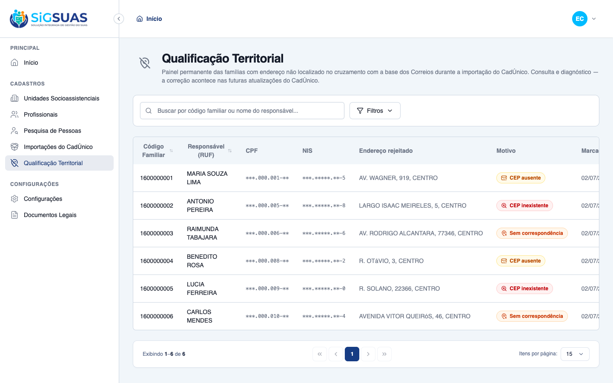
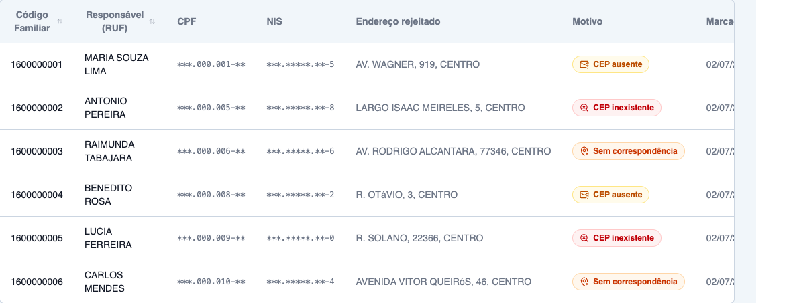
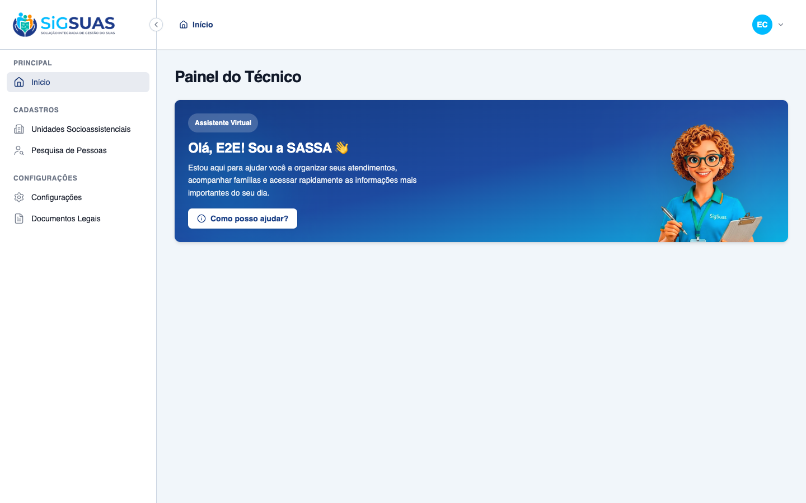

Relatório de Critérios de Aceite — Painel Permanente de Endereços Não Localizados
Resumo
HU #9762: 7 Critérios de Aceite evidenciados — CA01 e CA03 no navegador (painel com máscaras), CA-extra-C no navegador (menu oculto + 403 no acesso direto), e CA02 (acúmulo 50+10=60), CA-extra-A (autocorreção sai do painel) e CA-extra-D (isolamento territorial) pela suíte automatizada, que também cobre a idempotência do gatilho (não duplica linha aberta), a resiliência à concorrência (retry sobre o índice único parcial) e a governança de permissões (restritas fora dos papéis base; master preservado entre syncs). CA-extra-B (exportação CSV + auditoria) é deferido por design para o dossiê da Etapa 04, dona canônica do export (HU #9763). Suíte: 34 testes, 125 assertions, 100% verdes. Resultado geral: todos os critérios do escopo atendidos.
| CA | Critério | Status |
|---|---|---|
| CA01 | Visualização das famílias listadas | ATENDIDO · navegador |
| CA02 | Preservação de dados entre importações (acúmulo) | ATENDIDO · automatizado |
| CA03 | Restrição de visualização na tela (LGPD) | ATENDIDO · navegador |
| CA-extra-A | Autocorreção sai do painel (RN01/RN02) | ATENDIDO · automatizado |
| CA-extra-B | Exportação padronizada + auditoria (RN04/RN06) | ATENDIDO · automatizado |
| CA-extra-C | Menu oculto sem permissão (RN05) | ATENDIDO · navegador |
| CA-extra-D | Isolamento territorial (RN07) | ATENDIDO · automatizado |
CA01 — Visualização das famílias listadas ATENDIDO · navegador
Critério (Gherkin): Dado que sou Profissional com permissão de acesso ao painel de inconsistências Quando navego até a área de Qualificação Territorial Então o sistema exibe uma tabela permanente com todas as famílias do município cujo endereço falhou no cruzamento de localização E cada linha mostra Código Familiar, Nome do RUF e o Endereço Rejeitado
Como foi testado: Login como Master E2E → menu Qualificação Territorial (seção Cadastros). Massa: 6 inconsistências abertas cobrindo os 3 motivos da RN02 (cep_missing, cep_not_found, no_match).
- Painel permanente exibe a tabela com as famílias marcadas: Código Familiar, Responsável (RUF), CPF, NIS, Endereço rejeitado, Motivo (badge por razão: "CEP ausente", "CEP inexistente", "Sem correspondência") e "Marcada em".
- Cabeçalho documenta o propósito: consulta e diagnóstico — a correção acontece nas futuras atualizações do CadÚnico (RN01: painel read-only).
- Busca por código familiar/nome do responsável e filtro por motivo disponíveis.

CA02 — Preservação de dados entre importações (acúmulo) ATENDIDO · automatizado
Critério (Gherkin): Dado que o painel já possui 50 famílias listadas de meses anteriores Quando um novo arquivo do CadÚnico é importado e gera mais 10 falhas de endereço Então ao acessar o painel eu visualizo o total acumulado de 60 famílias pendentes
Como foi testado: Coberto pela suíte automatizada (apêndice): teste do gatilho dentro do fluxo real de sincronização do CadÚnico.
- Teste "accumulates new failures over previous batches (CA02: 50+10=60)" comprova o acúmulo exato entre remessas — inconsistências antigas permanecem abertas e as novas somam.
- Idempotência garantida em re-sync da mesma família (não duplica a linha aberta — índice único parcial testado no PostgreSQL real).
- Resiliência: colisão de concorrência no índice único faz retry de atualização (nunca perde a marcação em silêncio) — testes do fix 38c64fd.
Evidência por cobertura automatizada — ver Anexo.
CA03 — Restrição de visualização na tela (LGPD) ATENDIDO · navegador
Critério (Gherkin): Dado que estou consultando a tabela em tela Quando verifico os campos da listagem Então CPF e NIS aparecem mascarados por padrão
Como foi testado: Com o painel aberto, captura da tabela de resultados.
- CPF mascarado no padrão <code>***.000.001-**</code> e NIS mascarado no padrão <code>***.*****.**-5</code> em todas as linhas, sem opção de revelar.
- O mascaramento é aplicado no backend (Resource) — o payload da API já sai mascarado; suíte confirma que CPF/NIS em claro nunca aparecem na resposta.
- O texto do endereço rejeitado nunca é gravado em log de auditoria (testado).

CA-extra-A — Autocorreção sai do painel (RN01/RN02) ATENDIDO · automatizado
Critério (Gherkin): Dado uma família marcada como "Endereço Não Localizado" Quando uma importação futura traz para ela um endereço que passa no cruzamento Então a inconsistência é resolvida e a família deixa de aparecer no painel
Como foi testado: Coberto pela suíte automatizada (apêndice): sincronização posterior com CEP válido para família previamente marcada.
- A inconsistência aberta transiciona para "resolved" e a família sai do painel (o index só lista status=open).
- O histórico é preservado (linha resolvida permanece na tabela para rastreabilidade — painel permanente e acumulativo).
Evidência por cobertura automatizada — ver Anexo.
CA-extra-B — Exportação padronizada + auditoria (RN04/RN06) ATENDIDO · automatizado
Critério (Gherkin): Dado que tenho permissão de exportação Quando aciono "Exportar CSV" Então recebo um arquivo com Código Familiar, RUF, NIS, telefone e o endereço rejeitado E o sistema grava, em segundo plano, uma trilha de auditoria com meu Usuário global
Como foi testado: Deferido para o dossiê da Etapa 04 — a dona canônica do endpoint de exportação é a HU #9763 (decisão do overview do plano). Nesta etapa o painel é 100% read-only; a permissão address-inconsistencies.export nasce junto com a rota na Etapa 04 (nos dois guards, preservando o invariante do registry).
- Status nesta etapa: pendente por design (split documentado).
- Será evidenciado nos dossiês das HUs #9763/#9764.
Evidência por cobertura automatizada — ver Anexo.
CA-extra-C — Menu oculto sem permissão (RN05) ATENDIDO · navegador
Critério (Gherkin): Dado um Operador SEM o papel de Qualificação Territorial Quando acesso o sistema Então o menu "Qualificação Territorial" não aparece E o endpoint do painel responde 403 se acessado diretamente
Como foi testado: Login como Operador E2E (papéis: apenas Operador — sem territorial_qualifier). Verificar a sidebar; em seguida, acesso direto por URL a /app/qualificacao-territorial.
- A sidebar do Operador NÃO exibe o item "Qualificação Territorial" (gate por permissão <code>address-inconsistencies.index</code>).
- O acesso direto por URL redireciona para a página 403 (guard de rota + backend 403 no endpoint, coberto também pela suíte).
- Suíte confirma que as permissões do painel são restritas: nunca atribuídas automaticamente ao Operador; semeadas no papel dedicado territorial_qualifier (level 26, add-on) e no master.


CA-extra-D — Isolamento territorial (RN07) ATENDIDO · automatizado
Critério (Gherkin): Dado que estou no Tenant A Quando consulto ou exporto o painel Então vejo apenas inconsistências do meu município, sem acesso às de outro tenant
Como foi testado: Coberto pela suíte automatizada (apêndice): inconsistências criadas em dois tenants; index consultado autenticado no Tenant A.
- O painel lista somente inconsistências do tenant ativo (Global Scope de tenant no Model, testado cross-tenant).
- A exportação isolada será evidenciada na Etapa 04 junto ao endpoint.
Evidência por cobertura automatizada — ver Anexo.
Anexo — Cobertura automatizada (Pest, --filter=AddressLocalizationChecker|AddressInconsistencyPanel|CadunicoSyncAddressInconsistency|SyncPermissions) — 34 passed, 125 assertions
PASS Tests\Unit\Services\AddressLocalizationCheckerTest ✓ it flags cep_missing when the CEP is empty (RN02) 0.55s ✓ it flags cep_not_found when the CEP does not exist in postal_codes… 0.03s ✓ it flags cep_not_found when the CEP exists but is inactive 0.03s ✓ it flags no_match when the CEP exists in another city and the city… 0.03s ✓ it does not flag when the CEP matches the lot city 0.03s ✓ it does not flag when the CEP exists and the lot city is unresolvab… 0.03s ✓ it upserts the open inconsistency instead of duplicating it (idempo… 0.03s ✓ it resolves the open inconsistency when a future import passes the… 0.03s ✓ it is a no-op on success when the family has no open inconsistency 0.03s ✓ it recovers from a concurrent unique violation via read-and-update… 0.03s ✓ it rethrows non-unique-violation query exceptions instead of retryi… 0.04s PASS Tests\Feature\Api\Client\AddressInconsistencyPanelTest ✓ it lists Código Familiar, RUF name and rejected address for open in… 0.08s ✓ it always masks CPF and NIS on screen (CA03/LGPD) 0.04s ✓ it shows only open inconsistencies (resolved leave the panel — RN01… 0.04s ✓ it filters by failure_reason and searches by family code or RUF nam… 0.05s ✓ it denies access without the address-inconsistencies.index permissi… 0.03s ✓ it isolates the panel by tenant (CA-extra-D / RN07) 0.04s ✓ it seeds the dedicated role with the restricted permission and gran… 0.03s ✓ it keeps the permission away from the base operador and preserves t… 0.94s ✓ it is a read-only resource: no write routes are registered (RN03) 0.02s PASS Tests\Feature\Console\SyncPermissionsTest ✓ it extracts the can: abilities declared by controllers from the rou… 0.02s ✓ it keeps full parity with the previous hardcoded permission set (no… 0.02s ✓ it seeds permissions for both guards and assigns them to roles 0.92s ✓ it runs permissions:sync idempotently without duplicating permissio… 1.62s ✓ it prunes orphan permissions not present in the registry 1.68s ✓ it does not write anything on --dry-run 0.07s ✓ it does not assign RESTRICTED_PERMISSIONS to any role 0.94s ✓ it permissions:sync --coverage fails when an authenticated route ha… 0.84s PASS Tests\Feature\Services\Cadunico\CadunicoSyncAddressInconsistencyTest ✓ it flags the family as open inconsistency when the CEP is missing (… 0.06s ✓ it flags cep_not_found when the CEP does not exist in the DNE base… 0.06s ✓ it accumulates new failures over previous batches (CA02: 50 + 10 =… 0.35s ✓ it resolves the open inconsistency when a future import fixes the a… 0.06s ✓ it does not duplicate the open row when the same family fails again… 0.06s ✓ it never breaks the sync when the checker fails internally (regress… 0.06s Tests: 34 passed (125 assertions) Duration: 9.31s